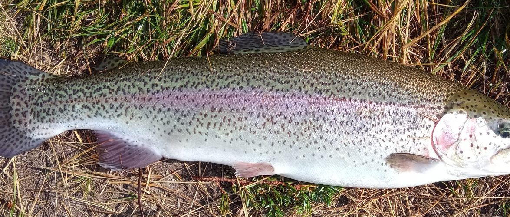
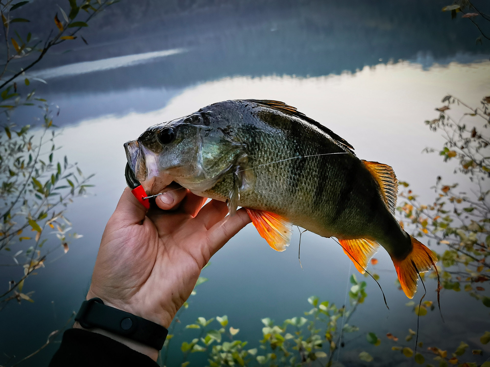
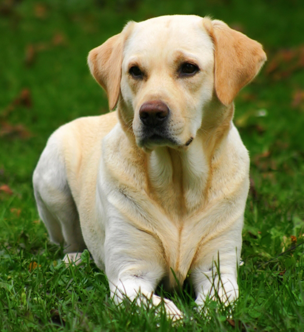
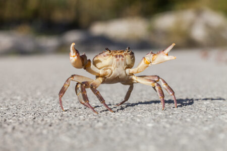

@Luigi
2 giorni fa
Trota è il nome comune che accomuna varie specie di pesci della famiglia Salmonidae.
Il termine viene utilizzato specificamente per i pesci appartenenti ai generi Salmo,
che include le specie dell'Oceano Atlantico, Oncorhynchus, che include le specie del Pacifico, e Salvelinus.


@Juan
4 giorni fa
Il pesce persico (Perca fluviatilis, Linnaeus 1758), conosciuto
comunemente in Italia come persico reale o, semplicemente, persico, é un pesce d'acqua dolce appartenente
alla famiglia dei Percidi, dell'ordine dei Perciformes.


@Alberto
4 giorni fa
I granchi (Brachyura Linnaeus, 1758)
sono un infraordine di crostacei decapodi prevalentemente acquatici.
I granchi sono in particolare dotati di un robusto carapace e di due potenti chele,
pertanto utilizzano quattro paia di arti per il movimento e le chele per prendere, difendersi e cibarsi.
In alcune specie una chela si presenta vistosamente di maggior dimensioni rispetto l'altra.
L'addome è ripiegato verticalmente ed è quindi nascosto.